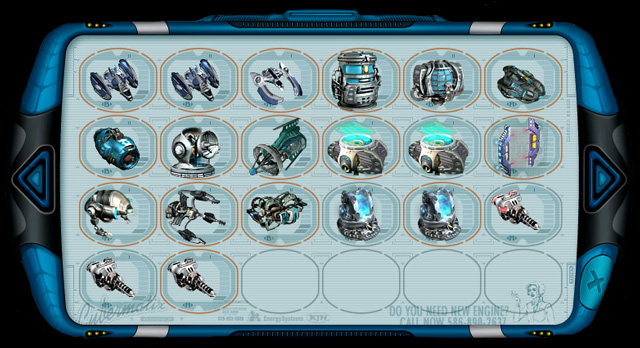
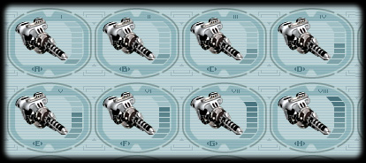

Руководство рейнджера > Экран
планеты > Магазин оборудования (E)
|
Руководство рейнджера > Экран
планеты > Магазин оборудования (E)
|
| Магазин оборудования (E) В магазине оборудования представлены образцы оборудования и вооружения для продажи. Уровень представленной техники зависит от проживающей расы и технологической развитости планеты. В свою очередь стоимость каждой вещи определяется исходя из ее характеристик, размера и качества. Чем меньше по размеру вещь и чем более высокого она качества, тем она дороже. |

| Помните! Самые качественные вещи гаальские, затем
идут фэянские. Человеческие вещи средние, а пеленгские чуть хуже. Малокские вещи
самые плохие: они быстро ломаются и требуют постоянной починки. Но зато они и
самые дешевые, поэтому экономически довольно выгодны. Каждая вещь в магазине имеет маркировку в виде горизонтальных прямоугольников в правой части иконки, римских цифр над иконкой и букв снизу. Все эти знаки показывают одну и ту же характеристику - технологическую продвинутость вещи. Всего существует восемь технологических уровней для оборудования (A, B, C, D, E, F, G, H). |

|
Чтобы узнать характеристики конкретного оборудования: Наведите курсор на данное оборудование, и появится всплывающее окно с его подробными характеристиками. Совет. Чтобы удобнее было сравнивать оборудование с уже имеющимся на борту, можно поверх окна магазина вызвать на экран диалоговое окно "Корабль" (S). Чтобы купить в магазине понравившееся оборудование: Щелкните по нему левой кнопкой мыши. Примечание. Операция будет невозможна, если у вас недостаточно денег или свободного места на корабле. Внимание! Все вновь приобретенное оборудование (кроме корпуса) будет положено в трюм, и вам придется установить его вручную. Для этого воспользуйтесь экраном "Корабль" (S). Новый корпус будет отправлен к вам на склад, активизировать его можно будет также из окна "Корабль" (S). |